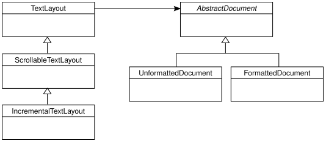

Displaying text¶
pyglet provides the font module for efficiently rendering high-quality
antialiased Unicode glyphs. pyglet can use any installed font on the operating system,
or you can provide your own font with your application.
Please note that not all font formats are supported, see Supported font formats
Text rendering is performed with the text module, which can display
word-wrapped formatted text. There is also support for interactive editing of
text on-screen with a caret.
Simple text rendering¶
The following complete example creates a window that displays “Hello, World” centered vertically and horizontally:
window = pyglet.window.Window()
label = pyglet.text.Label('Hello, world',
font_name='Times New Roman',
font_size=36,
x=window.width//2, y=window.height//2,
anchor_x='center', anchor_y='center')
@window.event
def on_draw():
window.clear()
label.draw()
pyglet.app.run()
The example demonstrates the most common uses of text rendering:
- The font name and size are specified directly in the constructor. Additional parameters exist for setting the bold and italic styles and the color of the text.
- The position of the text is given by the
xandycoordinates. The meaning of these coordinates is given by theanchor_xandanchor_yparameters. - The actual drawing of the text to the screen is done with the
pyglet.text.Label.draw()method. Labels can also be added to a graphics batch; see Batched rendering for details.
The HTMLLabel() class is used similarly, but accepts an HTML formatted string
instead of parameters describing the style. This allows the label to display
text with mixed style:
label = pyglet.text.HTMLLabel(
'<font face="Times New Roman" size="4">Hello, <i>world</i></font>',
x=window.width//2, y=window.height//2,
anchor_x='center', anchor_y='center')
See Formatted text for details on the subset of HTML that is supported.
The document/layout model¶
The Label() class demonstrated above presents a simplified interface to
pyglet’s complete text rendering capabilities. The underlying TextLayout()
and AbstractDocument classes provide a “model/view” interface to all of
pyglet’s text features.

Documents¶
A document is the “model” part of the architecture, and describes the
content and style of the text to be displayed. There are two concrete
document classes: UnformattedDocument and FormattedDocument.
UnformattedDocument models a document containing text in just one style,
whereas FormattedDocument allows the style to change within the text.
An empty, unstyled document can be created by constructing either of the
classes directly. Usually you will want to initialise the document with some
text, however. The decode_text(), decode_attributed() and decode_html()
functions return a document given a source string. For decode_text(), this is
simply a plain text string, and the return value is an UnformattedDocument:
document = pyglet.text.decode_text('Hello, world.')
decode_attributed() and decode_html() are described in detail in the next
section.
The text of a document can be modified directly as a property on the object:
document.text = 'Goodbye, cruel world.'
However, if small changes are being made to the document it can be more
efficient (when coupled with an appropriate layout; see below) to use the
delete_text() and insert_text() methods instead.
Layouts¶
The actual layout and rendering of a document is performed by the TextLayout()
classes. This split exists to reduce the complexity of the code, and to allow
a single document to be displayed in multiple layouts simultaneously (in other
words, many layouts can display one document).
Each of the TextLayout() classes perform layout in the same way, but represent
a trade-off in efficiency of update against efficiency of drawing and memory
usage.
The base TextLayout() class uses little memory, and shares its graphics
group with other TextLayout() instances in the same batch (see Batched rendering). When the text or style of the document is modified, or the
layout constraints change (for example, the width of the layout changes), the
entire text layout is recalculated. This is a potentially expensive
operation, especially for long documents. This makes TextLayout() suitable
for relatively short or unchanging documents.
ScrollableTextLayout is a small extension to TextLayout() that clips the
text to a specified view rectangle, and allows text to be scrolled within that
rectangle without performing the layout calculuation again. Because of this
clipping rectangle the graphics group cannot be shared with other text
layouts, so for ideal performance ScrollableTextLayout should be used only
if this behaviour is required.
IncrementalTextLayout uses a more sophisticated layout algorithm that
performs less work for small changes to documents. For example, if a document
is being edited by the user, only the immediately affected lines of text are
recalculated when a character is typed or deleted. IncrementalTextLayout
also performs view rectangle culling, reducing the amount of layout and
rendering required when the document is larger than the view.
IncrementalTextLayout should be used for large documents or documents that
change rapidly.
All the layout classes can be constructed given a document and display dimensions:
layout = pyglet.text.layout.TextLayout(document, width, height)
Additional arguments to the constructor allow the specification of a graphics batch and group (recommended if many layouts are to be rendered), and the optional multiline and wrap_lines flags.
- multiline
- To honor newlines in the document you will need to set this to
True. If you do not then newlines will be rendered as plain spaces. - wrap_lines
- If you expect that your document lines will be wider than the display width
then pyglet can automatically wrap them to fit the width by setting this
option to
True.
Like labels, layouts are positioned through their x, y, anchor_x and
anchor_y properties. Note that unlike AbstractImage, the anchor
properties accept a string such as "bottom" or "center" instead of a
numeric displacement.
Formatted text¶
The FormattedDocument class maintains style information for individual
characters in the text, rather than a single style for the whole document.
Styles can be accessed and modified by name, for example:
# Get the font name used at character index 0
font_name = document.get_style('font_name', 0)
# Set the font name and size for the first 5 characters
document.set_style(0, 5, dict(font_name='Arial', font_size=12))
Internally, character styles are run-length encoded over the document text; so longer documents with few style changes do not use excessive memory.
From the document’s point of view, there are no predefined style names: it
simply maps names and character ranges to arbitrary Python values. It is the
TextLayout classes that interpret this style information; for example, by
selecting a different font based on the font_name style. Unrecognised
style names are ignored by the layout – you can use this knowledge to store
additional data alongside the document text (for example, a URL behind a
hyperlink).
Character styles¶
The following character styles are recognised by all TextLayout() classes.
Where an attribute is marked “as a distance” the value is assumed to be
in pixels if given as an int or float, otherwise a string of the form
"0u" is required, where 0 is the distance and u is the unit; one
of "px" (pixels), "pt" (points), "pc" (picas), "cm"
(centimeters), "mm" (millimeters) or "in" (inches). For example,
"14pt" is the distance covering 14 points, which at the default DPI of 96
is 18 pixels.
font_name- Font family name, as given to
pyglet.font.load(). font_size- Font size, in points.
bold- Boolean.
italic- Boolean.
underline- 4-tuple of ints in range (0, 255) giving RGBA underline color, or None (default) for no underline.
kerning- Additional space to insert between glyphs, as a distance. Defaults to 0.
baseline- Offset of glyph baseline from line baseline, as a distance. Positive values give a superscript, negative values give a subscript. Defaults to 0.
color- 4-tuple of ints in range (0, 255) giving RGBA text color
background_color- 4-tuple of ints in range (0, 255) giving RGBA text background color; or
Nonefor no background fill.
Paragraph styles¶
Although FormattedDocument does not distinguish between character- and
paragraph-level styles, TextLayout() interprets the following styles only at
the paragraph level. You should take care to set these styles for complete
paragraphs only, for example, by using
set_paragraph_style().
These styles are ignored for layouts without the multiline flag set.
align"left"(default),"center"or"right".indent- Additional horizontal space to insert before the first glyph of the first line of a paragraph, as a distance.
leading- Additional space to insert between consecutive lines within a paragraph, as a distance. Defaults to 0.
line_spacing- Distance between consecutive baselines in a paragraph, as a distance.
Defaults to
None, which automatically calculates the tightest line spacing for each line based on the maximum font ascent and descent. margin_left- Left paragraph margin, as a distance.
margin_right- Right paragraph margin, as a distance.
margin_top- Margin above paragraph, as a distance.
margin_bottom- Margin below paragraph, as a distance. Adjacent margins do not collapse.
tab_stops- List of horizontal tab stops, as distances, measured from the left edge of the text layout. Defaults to the empty list. When the tab stops are exhausted, they implicitly continue at 50 pixel intervals.
wrap- Boolean. If True (the default), text wraps within the width of the layout.
For the purposes of these attributes, paragraphs are split by the newline character (U+0010) or the paragraph break character (U+2029). Line breaks within a paragraph can be forced with character U+2028.
Tabs¶
A tab character in pyglet text is interpreted as ‘move to the next tab stop’. Tab stops are specified in pixels, not in some font unit; by default there is a tab stop every 50 pixels and because of that a tab can look too small for big fonts or too big for small fonts.
Additionally, when rendering text with tabs using a monospace font, character boxes may not align vertically.
To avoid these visualization issues the simpler solution is to convert the tabs to spaces before sending a string to a pyglet text-related class.
Attributed text¶
pyglet provides two formats for decoding formatted documents from plain text. These are useful for loading preprepared documents such as help screens. At this time there is no facility for saving (encoding) formatted documents.
The attributed text format is an encoding specific to pyglet that can
exactly describe any FormattedDocument. You must use this encoding to
access all of the features of pyglet text layout. For a more accessible, yet
less featureful encoding, see the HTML encoding, described below.
The following example shows a simple attributed text encoded document:
Chapter 1
My father's family name being Pirrip, and my Christian name Philip,
my infant tongue could make of both names nothing longer or more
explicit than Pip. So, I called myself Pip, and came to be called
Pip.
I give Pirrip as my father's family name, on the authority of his
tombstone and my sister - Mrs. Joe Gargery, who married the
blacksmith. As I never saw my father or my mother, and never saw
any likeness of either of them (for their days were long before the
days of photographs), my first fancies regarding what they were
like, were unreasonably derived from their tombstones.
Newlines are ignored, unless two are made in succession, indicating a
paragraph break. Line breaks can be forced with the \\ sequence:
This is the way the world ends \\
This is the way the world ends \\
This is the way the world ends \\
Not with a bang but a whimper.
Line breaks are also forced when the text is indented with one or more spaces or tabs, which is useful for typesetting code:
The following paragraph has hard line breaks for every line of code:
import pyglet
window = pyglet.window.Window()
pyglet.app.run()
Text can be styled using a attribute tag:
This sentence makes a {bold True}bold{bold False} statement.
The attribute tag consists of the attribute name (in this example, bold)
followed by a Python bool, int, float, string, tuple or list.
Unlike most structured documents such as HTML, attributed text has no concept
of the “end” of a style; styles merely change within the document. This
corresponds exactly to the representation used by FormattedDocument
internally.
Some more examples follow:
{font_name 'Times New Roman'}{font_size 28}Hello{font_size 12},
{color (255, 0, 0, 255)}world{color (0, 0, 0, 255)}!
(This example uses 28pt Times New Roman for the word “Hello”, and 12pt red text for the word “world”).
Paragraph styles can be set by prefixing the style name with a period (.). This ensures the style range exactly encompasses the paragraph:
{.margin_left "12px"}This is a block quote, as the margin is inset.
{.margin_left "24px"}This paragraph is inset yet again.
Attributed text can be loaded as a Unicode string. In addition, any character can be inserted given its Unicode code point in numeric form, either in decimal:
This text is Copyright {#169}.
or hexadecimal:
This text is Copyright {#xa9}.
The characters { and } can be escaped by duplicating them:
Attributed text uses many "{{" and "}}" characters.
Use the decode_attributed function to decode attributed text into a
FormattedDocument:
document = pyglet.text.decode_attributed('Hello, {bold True}world')
HTML¶
While attributed text gives access to all of the features of
FormattedDocument and TextLayout(), it is quite verbose and difficult
produce text in. For convenience, pyglet provides an HTML 4.01 decoder that
can translate a small, commonly used subset of HTML into a
FormattedDocument.
Note that the decoder does not preserve the structure of the HTML document – all notion of element hierarchy is lost in the translation, and only the visible style changes are preserved.
The following example uses decode_html() to create a FormattedDocument from
a string of HTML:
document = pyglet.text.decode_html('Hello, <b>world</b>')
The following elements are supported:
B BLOCKQUOTE BR CENTER CODE DD DIR DL EM FONT H1 H2 H3 H4 H5 H6 I IMG KBD
LI MENU OL P PRE Q SAMP STRONG SUB SUP TT U UL VAR
The style attribute is not supported, so font sizes must be given as HTML
logical sizes in the range 1 to 7, rather than as point sizes. The
corresponding font sizes, and some other stylesheet parameters, can be
modified by subclassing HTMLDecoder.
Custom elements¶
Graphics and other visual elements can be inserted inline into a document
using insert_element(). For example, inline elements are
used to render HTML images included with the IMG tag. There is currently
no support for floating or absolutely-positioned elements.
Elements must subclass InlineElement and override the place and remove
methods. These methods are called by TextLayout() when the element becomes
or ceases to be visible. For TextLayout() and ScrollableTextLayout, this is
when the element is added or removed from the document; but for
IncrementalTextLayout the methods are also called as the element scrolls in
and out of the viewport.
The constructor of InlineElement gives the width and height (separated into
the ascent above the baseline, and descent below the baseline) of the element.
Typically an InlineElement subclass will add graphics primitives to the
layout’s graphics batch; though applications may choose to simply record the
position of the element and render it separately.
The position of the element in the document text is marked with a NUL character (U+0000) placeholder. This has the effect that inserting an element into a document increases the length of the document text by one. Elements can also be styled as if they were ordinary character text, though the layout ignores any such style attributes.
User-editable text¶
While pyglet does not come with any complete GUI widgets for applications to
use, it does implement many of the features required to implement interactive
text editing. These can be used as a basis for a more complete GUI system, or
to present a simple text entry field, as demonstrated in the
examples/text_input.py example.
IncrementalTextLayout should always be used for text that can be edited by
the user. This class maintains information about the placement of glyphs on
screen, and so can map window coordinates to a document position and
vice-versa. These methods are get_position_from_point(),
get_point_from_position(), get_line_from_point(), get_point_from_line(),
get_line_from_position(), get_position_from_line(), get_position_on_line() and
get_line_count().
The viewable rectangle of the document can be adjusted using a document
position instead of a scrollbar using the ensure_line_visible() and
ensure_x_visible() methods.
IncrementalTextLayout can display a current text selection by temporarily
overriding the foreground and background colour of the selected text. The
selection_start and selection_end properties give the range of the
selection, and selection_color and selection_background_color the colors
to use (defaulting to white on blue).
The Caret class implements an insertion caret (cursor) for
IncrementalTextLayout. This includes displaying the blinking caret at the
correct location, and handling keyboard, text and mouse events. The behaviour
in response to the events is very similar to the system GUIs on Windows, Mac
OS X and GTK. Using Caret frees you from using the IncrementalTextLayout
methods described above directly.
The following example creates a document, a layout and a caret and attaches the caret to the window to listen for events:
import pyglet
window = pyglet.window.Window()
document = pyglet.text.document.FormattedDocument()
layout = pyglet.text.layout.IncrementalTextLayout(document, width, height)
caret = pyglet.text.caret.Caret(layout)
window.push_handlers(caret)
When the layout is drawn, the caret will also be drawn, so this example is nearly complete enough to display the user input. However, it is suitable for use when only one editable text layout is to be in the window. If multiple text widgets are to be shown, some mechanism is needed to dispatch events to the widget that has keyboard focus. An example of how to do this is given in the examples/text_input.py example program.
Loading system fonts¶
The layout classes automatically load fonts as required. You can also explicitly load fonts to implement your own layout algorithms.
To load a font you must know its family name. This is the name displayed in the font dialog of any application. For example, all operating systems include the Times New Roman font. You must also specify the font size to load, in points:
# Load "Times New Roman" at 16pt
times = pyglet.font.load('Times New Roman', 16)
Bold and italic variants of the font can specified with keyword parameters:
times_bold = pyglet.font.load('Times New Roman', 16, bold=True)
times_italic = pyglet.font.load('Times New Roman', 16, italic=True)
times_bold_italic = pyglet.font.load('Times New Roman', 16,
bold=True, italic=True)
For maximum compatibility on all platforms, you can specify a list of font names to load, in order of preference. For example, many users will have installed the Microsoft Web Fonts pack, which includes Verdana, but this cannot be guaranteed, so you might specify Arial or Helvetica as suitable alternatives:
sans_serif = pyglet.font.load(('Verdana', 'Helvetica', 'Arial'), 16)
Also you can check for the availability of a font using pyglet.font.have_font():
# Will return True
pyglet.font.have_font('Times New Roman')
# Will return False
pyglet.font.have_font('missing-font-name')
If you do not particularly care which font is used, and just need to display some readable text, you can specify None as the family name, which will load a default sans-serif font (Helvetica on Mac OS X, Arial on Windows XP):
sans_serif = pyglet.font.load(None, 16)
Font sizes¶
When loading a font you must specify the font size it is to be rendered at, in points. Points are a somewhat historical but conventional unit used in both display and print media. There are various conflicting definitions for the actual length of a point, but pyglet uses the PostScript definition: 1 point = 1/72 inches.
Font resolution¶
The actual rendered size of the font on screen depends on the display resolution. pyglet uses a default DPI of 96 on all operating systems. Most Mac OS X applications use a DPI of 72, so the font sizes will not match up on that operating system. However, application developers can be assured that font sizes remain consistent in pyglet across platforms.
The DPI can be specified directly in the pyglet.font.load() function, and as
an argument to the TextLayout() constructor.
Determining font size¶
Once a font is loaded at a particular size, you can query its pixel size with the attributes:
Font.ascent
Font.descent
These measurements are shown in the diagram below.

Font metrics. Note that the descent is usually negative as it descends below the baseline.
You can calculate the distance between successive lines of text as:
ascent - descent + leading
where leading is the number of pixels to insert between each line of text.
Loading custom fonts¶
You can supply a font with your application if it’s not commonly installed on the target platform. You should ensure you have a license to distribute the font – the terms are often specified within the font file itself, and can be viewed with your operating system’s font viewer.
Loading a custom font must be performed in two steps:
- Let pyglet know about the additional font or font files.
- Load the font by its family name.
For example, let’s say you have the Action Man font in a file called
action_man.ttf. The following code will load an instance of that font:
pyglet.font.add_file('action_man.ttf')
action_man = pyglet.font.load('Action Man')
Similarly, once the font file has been added, the font name can be specified as a style on a label or layout:
label = pyglet.text.Label('Hello', font_name='Action Man')
Fonts are often distributed in separate files for each variant. Action Man
Bold would probably be distributed as a separate file called
action_man_bold.ttf; you need to let pyglet know about this as well:
font.add_file('action_man_bold.ttf')
action_man_bold = font.load('Action Man', bold=True)
Note that even when you know the filename of the font you want to load, you
must specify the font’s family name to pyglet.font.load().
You need not have the file on disk to add it to pyglet; you can specify any file-like object supporting the read method. This can be useful for extracting fonts from a resource archive or over a network.
If the custom font is distributed with your application, consider using the Application resources.
Supported font formats¶
pyglet can load any font file that the operating system natively supports, but not all formats all fully supported.
The list of supported formats is shown in the table below.
Font Format Windows Mac OS X Linux (FreeType) TrueType (.ttf) X X X PostScript Type 1 (.pfm, .pfb) X X X Windows Bitmap (.fnt) X X Mac OS X Data Fork Font (.dfont) X OpenType (.otf) [1] X X11 font formats PCF, BDF, SFONT X Bitstream PFR (.pfr) X
| [1] | All OpenType fonts are backward compatible with TrueType, so while the advanced OpenType features can only be rendered with Mac OS X, the files can be used on any platform. pyglet does not currently make use of the additional kerning and ligature information within OpenType fonts. In Windows a few will use the variant DEVICE_FONTTYPE and may render bad, by example inconsolata.otf, from http://levien.com/type/myfonts/inconsolata.html |
Some of the fonts found in internet may miss information for some operating systems, others may have been written with work in progress tools not fully compliant with standards. Using the font with text editors or fonts viewers can help to determine if the font is broken.
OpenGL font considerations¶
Text in pyglet is drawn using textured quads. Each font maintains a set of one or more textures, into which glyphs are uploaded as they are needed. For most applications this detail is transparent and unimportant, however some of the details of these glyph textures are described below for advanced users.
Context affinity¶
When a font is loaded, it immediately creates a texture in the current context’s object space. Subsequent textures may need to be created if there is not enough room on the first texture for all the glyphs. This is done when the glyph is first requested.
pyglet always assumes that the object space that was active when the font was loaded is the active one when any texture operations are performed. Normally this assumption is valid, as pyglet shares object spaces between all contexts by default. There are a few situations in which this will not be the case, though:
- When explicitly setting the context share during context creation.
- When multiple display devices are being used which cannot support a shared context object space.
In any of these cases, you will need to reload the font for each object space that it’s needed in. pyglet keeps a cache of fonts, but does so per-object-space, so it knows when it can reuse an existing font instance or if it needs to load it and create new textures. You will also need to ensure that an appropriate context is active when any glyphs may need to be added.
Blend state¶
The glyph textures have an internal format of GL_ALPHA, which provides
a simple way to recolour and blend antialiased text by changing the
vertex colors. pyglet makes very few assumptions about the OpenGL state, and
will not alter it besides changing the currently bound texture.
The following blend state is used for drawing font glyphs:
from pyglet.gl import *
glBlendFunc(GL_SRC_ALPHA, GL_ONE_MINUS_SRC_ALPHA)
glEnable(GL_BLEND)
All glyph textures use the GL_TEXTURE_2D target, so you should ensure that
a higher priority target such as GL_TEXTURE_3D is not enabled before
trying to render text.